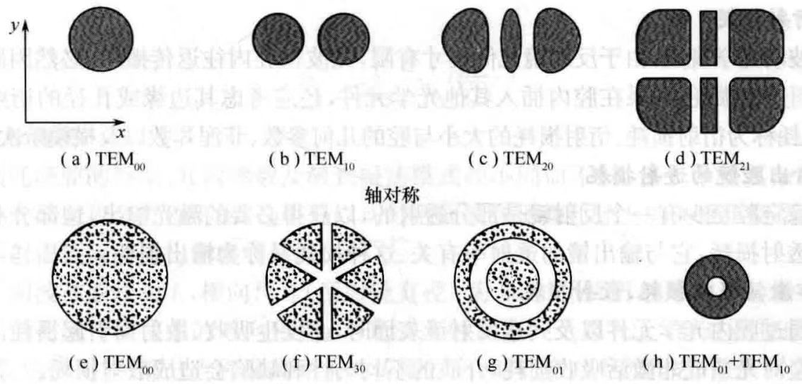

激光模式
光学谐振腔与激光模式的关系
纵向
波的传播方向.
横向
与波传播方向垂直的方向.
对于一个给定的光学谐振腔，并不是任意频率、任意形式的激光振荡都可以存在于其中，无论是对开腔还是闭腔，都对腔内的激光场产生约束作用.
电磁场理论表明，在具有一定边界条件的腔内，电磁场只能存在于一系列分立的本征状态.
激光场的每种本征状态具有一定的振荡频率与空间分布，称为一种激光模式.
从光子角度看，每一种激光模式就是腔内可以区分的一种光子态.
考虑纵向与横向的定义，激光模式可以分为纵模与横模，分别表示谐振腔内沿纵向的电磁场分布与在垂直于光轴的横截面上的电磁场分布.
腔内电磁场的本征态由Maxwell方程组与腔的边界条件决定.
不同类型何与结构的谐振腔的边界条件各不相同，因此在谐振腔内振荡的激光模式也各不相同.
一旦给定了腔的具体结构，就可以唯一确定在其中振荡的激光模式的特征，这就是模式与腔结构间的具体依赖关系.
驻波与谐振频率
前置知识
当激光器处于振荡状态，激光器内部的光为满足一定相位条件的驻波.
形成驻波的条件
根据波动理论，当两列频率、振动方向与振幅均相同的波在同一直线上沿相反方向传播时，就叠加形成驻波.
相邻两个波节与相邻两个波腹之间的距离都是原来两列行波波长的一半.
平行平面镜腔中的驻波
激光技术中应用的谐振腔，其尺度一般大于工作波长，特别是腔的横向尺寸.
如，圆形反射镜盘的半径\(a\gg \lambda\).
这种情况下，对F-P腔而言，可以假设均匀平面波是腔内电磁场的本征态.
什么叫电磁场的本征态？
为什么是F-P腔？
为什么均匀平面波不能作为有源F-P腔的本征模存在？
什么叫有源F-P腔？
有源腔就是包含增益介质的腔，无源腔就是不包含增益介质的腔.
严格的光腔模式理论表明：均匀平面波不能作为有源F-P腔的本征模存在.
但若满足条件：
$$a \gg \lambda$$
更确切地说满足条件：
$$\frac{a^2}{L\lambda} \gg 1$$
- \(a\)：圆形反射镜片半径.
- \(L\)：腔长.
- \(\lambda\)：激光波长.
- \(\frac{a^2}{L\lambda}\)：F-P腔的菲涅尔系数.
则腔内的最低损耗模式仍可以近似为平面波.
均匀平面波在F-P腔中沿轴线方向往返传播的情形
激光束在谐振腔中振荡时，一列光波从谐振腔的左端传播到右端，被右端的反射镜反射回来，又向左传播，直到被左端的反射镜反射回来，不断往返.
因此，谐振腔内满足形成驻波的条件.
当光波在腔镜上反射时，入射光波场与反射光波场将会发生干涉，多次往复反射就会发生多光束干涉.
为了能在腔内形成稳定振荡，要求入射光波与反射光波能因干涉而加强，即发生相长干涉.
干涉相长说明光在谐振腔中越来越强，不会因逐渐减弱而消失.
多光束相长干涉条件：
光波从某一点出发，经腔内往返一周再回到原来位置时，与初始出发光波的相位差为\(2\pi\)的整数倍.
若设均匀平面波在腔内往返一周时的相位滞后为\(\Delta\phi\)，则相长干涉条件可表示为：
光腔的驻波条件（相长干涉条件）
$$\Delta\phi = \frac{2\pi}{\lambda_0}2L' = 2q\pi,\quad q\in\mathbb{N}_+$$
- \(\lambda_0\)：真空中的光波长.
- \(L'\)：腔的光学长度.
谐振腔的光学长度\(L'\)
对于腔内介质沿轴线非均匀分布的一般情况：
$$L' = \int_0^L \eta(z) dz$$
- \(z\)轴：腔轴
- \(\eta(z)\)：沿腔轴线方向的折射率分布
当光波长与腔的光学长度满足上式时，将在腔内形成驻波.
\(L'\)一定的情况下，有：
腔的谐振波长
$$\lambda_q = \frac{2L'}{q}$$
$$L' = q\frac{\lambda_q}{2}$$
腔内驻波的特征：达到谐振时，腔的光学长度应为半波长的整数倍.
腔的谐振频率
$$\nu_q = \frac{c}{\lambda_q} = q\frac{c}{2L'}$$
上两式即为F-P腔中沿轴向传播的平面波谐振条件.
\(L'\)一定的谐振腔只对满足上式的光子才提供正反馈，使之达到谐振.
平行平面镜腔中的谐振频率只能随正整数\(q\)的不同取值而取一系列分立值.
F-P腔中的纵模
干涉相长条件中不同的\(m\)值对应于不同的驻波，这些驻波的电磁场在沿轴线方向（纵向）上的分布是不同的.
由整数\(m\)表征的腔内纵向的稳定场分布称为激光的纵模.
\(m\)称为纵模序数，不同纵模相应于不同的\(m\)值，对应不同的谐振频率.
在平行平面镜腔中，满足腔的谐振频率的沿轴线方向（纵向）形成的驻波场构成腔内电磁场的本征模式.
特点
在腔的横截面内，场的振幅是均匀分布的，而沿腔的轴线方向（纵向）形成驻波，驻波的波节数由\(q\)决定.
纵模间隔\(\Delta\nu_q\)
腔内相邻两纵模频率之差.
$$\Delta\nu_q = \nu_{q+1} - \nu_q = \frac{c}{2L'}$$

腔的多纵模振荡
既满足腔的谐振频率，又满足振荡阈值条件的模，才可能在腔内实际存在.

若以\(\Delta\nu_T\)表示增益曲线高于阈值部分的频带宽度，则可能同时振荡的纵模数为：
$$N = \left[\frac{\Delta\nu_T}{\Delta\nu_q}\right] + 1$$
物质的激发程度越高，\(\Delta\nu_T\)越大，能够同时振荡的纵模数越多.
腔越长，\(\Delta\nu_q\)越小，能够同时振荡的纵模数越多.
在利用锁模技术获得超短脉冲时，希望同时振荡的纵模数越多越好.
孔阑传输线模型
使光波沿一系列同轴圆孔单向传播，以模拟在平面开腔中的往复反射.
圆孔孔径等于腔镜直径.
相邻圆孔距离等于腔长.
横模
横模
除了纵向外，谐振腔内电磁场在垂直于传播方向的横向截面内也存在稳定的场分布，常称为横模.
每一种横模对应一种横向的稳定场分布.
将一块观察屏插入激光器的输出镜前，即可观察到激光输出的横模图形，即光束横截面上的光强分布情况.
激光模式一般用符号\(\text{TEM}_{mnq}\)标记.
TEM表示横向电磁场.
\(q\)表示纵模序数，即纵向驻波波节数，\(q\)值通常很大，且只有\(q\)值不同的模式之间除频率差外几乎没有差别，因此通常不写出.
\(m, n\in\mathbb{N}_+\)为横模序数，\(m,n\)取值越大，光斑图形越复杂.
\(m, n\)取值规定
对于轴对称图形，描述镜面上光场的节线数：\(m\)表示沿腔镜面直角坐标系的水平方向光场节线数，\(n\)表示垂直方向光场节线数.
对于旋转对称图形，\(m,n\)分别表示沿腔镜面极坐标系的角向和径向的光场节线数：\(m\)表示沿辐角向的节线数，即暗直径数；\(n\)表示沿径向节线圆数，即暗环数.
若\(m=0,n=0\)，则\(\text{TEM}_{00q}\)为基模，是光斑的最简单形式.
\(m,n\)取其他值的横模称为高阶横模.

总结
对于激光模式的理解可以总结为：
纵模与横模各从一个侧面反映了谐振腔内稳定的光场分布，只有同时运用纵模与横模概念，才能全面反映腔内光场分布.
不同纵模与不同横模都各自对应着不同的光场分布和频率，但不同纵模光场分布之间差异很小，不能用肉眼观察到，只能从频率的差异区分它们；不同的横模，由于其光场分布差异较大，很容易从光斑图形来区分.
[注]不同横模之间也有频率差异.